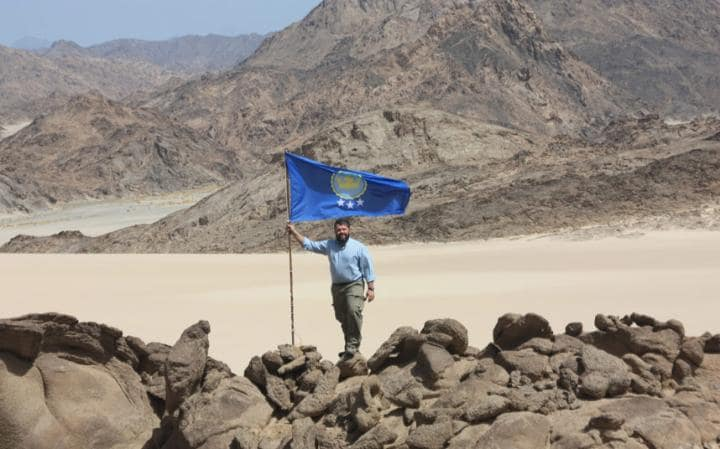
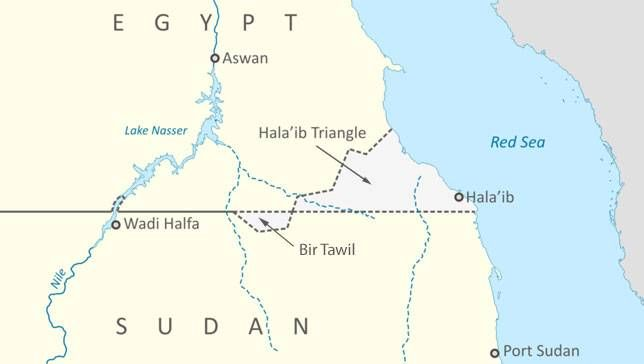

Arid landscape of Bir Tawil. Image Source
Arid landscape of Bir Tawil. Image Source
Every father’s dream is to make their daughter feel like a princess. That is exactly what Jeremiah Heaton, an American father from Virginia, did for his daughter. He made her a princess of Bir Tawil, an “unclaimed” area between Egypt and Sudan. After obtaining the necessary permits and paperwork to complete the treacherous journey to the middle of a dry, arid “no man's’ land” in the borderlands of Egypt and Sudan, Heaton planted a flag, effectively claiming the region, and named his daughter as the princess. To understand how the existence of Bir Tawil is possible, we must first understand the border between the two African nations.
Virginia-native Jeremiah Heaton plants flag in Bir Tawil. Image Source
During the colonial era, Sudan was initially under shared control of Britain and Egypt. After a treaty was signed between the British, Sudanese and Egyptians, creating the British-controlled state of Sudan. The border was to be at the 22nd parallel, but in a later treaty, a mountain just south of this demarcation, now called Bir Tawil, that was populated by an Egypt-linked tribe was handed over to Egypt. At the same time, another patch of land called the Hala’ib, north of the 22nd parallel, was given to Sudan, as the people inhabiting the area had stronger ties with Sudan. The Hala’ib triangle had access to the Red Sea, so after independence from the British, both Egypt and Sudan laid claim to this well-positioned area. As of now, the triangle still remains disputed as both countries have claims to the area.
Map showing Bir Tawil and the Hala'ib Triangle. Image Source
This is linked to the borderland at Bir Tawil as the documents that give each country claim to Hala’ib both claim that the other country has Bir Tawil. Essentially, neither countries claim this area themselves. This creates a geopolitical vacuum, which civilians like Heaton can exploit. Although it can be argued whether or not his claim is legitimate, as his “country” would need to be accepted by other countries to be validated, his daughter did receive one nice birthday gift.
"Bir Tawil." Atlas Obscura, n.d. Web. 14 June 2017.
Linshi, Jack. "Man Plants Flag on Unclaimed African Land So Daughter Can Be Princess." Time, 14 July 2014. Web. 14 June 2017.
Shenker, Jack. "Welcome to the Land That No Country Wants." The Guardian. Guardian News and Media, 03 Mar. 2016. Web. 14 June 2017.
{kind=link}
{kind=link}
{kind=link}